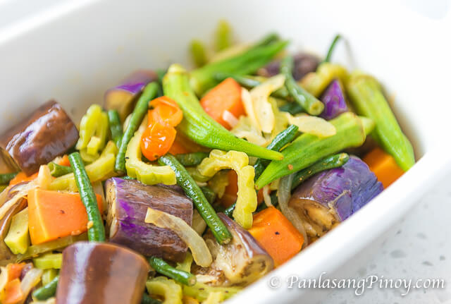

Best Filipino Recipe

Ginisang Gulay (Sauted Vegetable)
Prep time
5 mins
Cook time
18 mins
Total time
23 mins
SERVES: 3
Ingredients
1 medium bitter gourd (ampalaya), cored and sliced.
6 to 8 pieces okra.
1 cup sliced tomatoes.
8 pieces string beans sliced in 2 inch pieces.
1 medium Chinese eggplant.
¾ cups vegetable broth.
1 medium yellow onion, sliced.
1½ cups cubed calabaza squash.
4 cloves garlic, crushed.
salt and pepper to taste.
3 tablespoons cooking oil.
Instructions:
Heat oil in a pan.
Saute garlic and onion.
Add the tomato when the onion gets soft. Cook for 2 minutes.
Add the calabaza squash. Stir and cook for another 2 minutes.
Put the eggplant, okra, string beans, and bitter gourd in the pan. Stir fry for 3 minutes.
Pour the vegetable broth. Cover and cook for 5 to 7 minutes.
Remove the cover. Add salt and pepper to taste.
Transfer to a serving plate.
Share and enjoy!